本文是 Distill 关于图神经网络的两篇论文之一。请参阅 理解图上的卷积[[daigavane2021understanding]]，了解图像上的卷积如何自然地泛化到图上的卷积。
图无处不在；现实世界中的对象通常通过与其他事物的连接来定义。一组对象及其之间的连接，自然地可以用图来表示。研究人员开发出可在图数据上运行的神经网络（称为图神经网络，或 GNN）已有十多年历史[[Scarselli2009-ku]]。最近的发展大大提升了它们的能力和表达力。我们开始在抗菌药物发现[[Stokes2020-az]]、物理模拟[[Sanchez-Gonzalez2020-yo]]、假新闻检测[[Monti2019-tf]]、交通预测[[undated-sy]]和推荐系统[[Eksombatchai2017-il]]等领域看到实际应用。
本文将探索并解释现代图神经网络。我们将这项工作分为四个部分。首先，我们看看哪些类型的数据最自然地用图来表示，以及一些常见示例。其次，我们探讨图与其他类型数据的不同之处，以及在使用图时必须做出的一些特殊选择。第三，我们构建一个现代 GNN，从该领域的历史建模创新开始，一步步介绍模型的各个部分。我们从一个极简实现逐步发展到最先进的 GNN 模型。第四也是最后，我们提供了一个 GNN 游乐场，你可以在其中尝试一个真实世界的任务和数据集，从而更直观地理解 GNN 模型的每个组件如何影响其做出的预测。
首先，让我们明确图是什么。图表示一组实体（节点）之间的关系（边）。
为了进一步描述每个节点、边或整个图，我们可以在图的这些组成部分中存储信息。
我们还可以通过为边关联方向性来对图进行特殊化（有向图、无向图）。
图是非常灵活的数据结构，如果现在看起来还很抽象，我们将在下一节通过示例让它变得具体。
图及其所在之处
你可能已经熟悉某些类型的图数据，例如社交网络。然而，图是一种极其强大且通用的数据表示方式，我们将展示两种你可能没有想过可以用图建模的数据：图像和文本。虽然反直觉，但通过将图像和文本视为图，我们可以更多地了解它们的对称性和结构，并建立起有助于理解其他不那么规则的图数据的直觉，我们将在后面讨论这些。
将图像视为图
我们通常将图像视为带有图像通道的矩形网格，用数组表示（例如 244x244x3 的浮点数）。另一种思考图像的方式是将它们视为具有规则结构的图，其中每个像素是一个节点，并通过边与相邻像素相连。每个非边界像素恰好有 8 个邻居，每个节点存储的信息是一个表示该像素 RGB 值的三维向量。
可视化图连通性的一种方法是通过其邻接矩阵。我们对节点进行排序（这里是 5x5 笑脸图像的 25 个像素），然后在一个 $n_{nodes} \times n_{nodes}$ 的矩阵中，如果两个节点之间有边，则填充一个条目。请注意，下面的三种表示是同一数据的不同视图。
将文本视为图
我们可以通过为每个字符、单词或 token 关联索引，并将文本表示为这些索引的序列来数字化文本。这创建了一个简单的有向图，其中每个字符或索引是一个节点，并通过边连接到跟随它的节点。
当然，在实践中，文本和图像通常不是这样编码的：这些图表示是冗余的，因为所有图像和所有文本都会具有非常规则的结构。例如，图像的邻接矩阵具有带状结构，因为所有节点（像素）都是在网格中连接的。文本的邻接矩阵只是一条对角线，因为每个词只连接到前一个词和后一个词。
这种表示（字符 token 的序列）指的是文本在 RNN 中常用的表示方式；其他模型，如 Transformer，可以被视为将文本视为一个完全连通的图，我们在其中学习 token 之间的关系。详见
Graph Attention Networks
现实中的图值数据
图是描述你可能已经熟悉的数据的有用工具。让我们转向结构更异构的数据。在这些示例中，每个节点的邻居数量是可变的（与图像和文本的固定邻域大小不同）。这类数据除了用图之外很难用其他方式表述。
将分子视为图。分子是物质的基本组成部分，由三维空间中的原子和电子构成。所有粒子都在相互作用，但当一对原子稳定地保持在一定距离时，我们说它们共享共价键。不同的原子对和键具有不同的距离（例如单键、双键）。将这个三维对象描述为图是一种非常方便且常见的抽象，其中节点是原子，边是共价键。[[Duvenaud2015-yc]] 下面是两种常见分子及其对应的图。
将社交网络视为图。社交网络是研究人群、机构和组织集体行为模式的工具。我们可以通过将个体建模为节点、将它们的关系建模为边来构建表示人群的图。
与图像和文本数据不同，社交网络没有相同的邻接矩阵。
将引文网络视为图。科学家在发表论文时通常会引用其他科学家的工作。我们可以将这些引文网络可视化为图，其中每篇论文是一个节点，每条有向边是一篇论文对另一篇论文的引用。此外，我们可以将每篇论文的信息（如摘要的词嵌入）添加到每个节点中。（参见 [[Mikolov2013-vr]]、[[Devlin2018-mi]]、[[Pennington2014-kg]]）。
其他示例。在计算机视觉中，我们有时想要标记视觉场景中的对象。然后我们可以将这些对象视为节点，将它们的关系视为边来构建图。机器学习模型、程序代码[[Allamanis2017-kz]] 和 数学方程[[Lample2019-jg]] 也可以被表述为图，其中变量是节点，边是以上下文变量为输入和输出的操作。你可能会在这些上下文中看到“数据流图”这个术语。
现实世界图的结构在不同类型的数据之间可能差异很大——有些图有许多节点但它们之间的连接很少，反之亦然。图数据集在节点数、边数以及节点的连通性方面可能差异很大（无论是在给定数据集内部还是数据集之间）。
哪些类型的问题具有图结构数据？
我们已经描述了一些现实中的图示例，但我们希望对这些数据执行什么任务呢？图上有三种通用的预测任务类型：图级别、节点级别和边级别。
在图级别任务中，我们预测整个图的单个属性。对于节点级别任务，我们预测图中每个节点的一些属性。对于边级别任务，我们希望预测图中边的属性或是否存在。
对于上述三种级别的预测问题（图级别、节点级别和边级别），我们将展示所有这些问题都可以用一个单一的模型类别——GNN 来解决。但首先，让我们更详细地浏览一下这三类图预测问题，并为每个问题提供具体示例。
还有其他相关任务是活跃的研究领域。例如，我们可能想要
生成图
，或者
解释图上的预测
。更多主题可以在
深入细节部分
找到
图级别任务
在图级别任务中，我们的目标是预测整个图的属性。例如，对于表示为图的分子，我们可能想要预测这个分子闻起来怎么样，或者它是否会与某种与疾病相关的受体结合。
这类似于使用 MNIST 和 CIFAR 的图像分类问题，我们希望为整张图像关联一个标签。对于文本，类似的问题是情感分析，我们希望一次性识别整个句子的情绪或情感。
节点级别任务
节点级别任务关注于预测图中每个节点的身份或角色。[Zachary1977-jg]
节点级别预测问题的经典示例是 Zach’s karate club。[] 该数据集是一个由个人组成的单一社交网络图，这些个人在一次政治分裂后宣誓效忠于两个空手道俱乐部之一。故事是这样的，Hi 先生（教练）和 John H（管理员）之间的争执在空手道俱乐部中造成了分裂。节点代表 individual 空手道练习者，边代表这些成员在空手道之外的互动。预测问题是分类在争执之后，给定的成员是否会忠于 Hi 先生或 John H。在这种情况下，节点到教练或管理员的距离与这个标签高度相关。
按照图像的类比，节点级别预测问题类似于图像分割，我们试图标记图像中每个像素的角色。对于文本，类似的任务是预测句子中每个词的词性（例如名词、动词、副词等）。
边级别任务
图中剩下的预测问题是边预测。
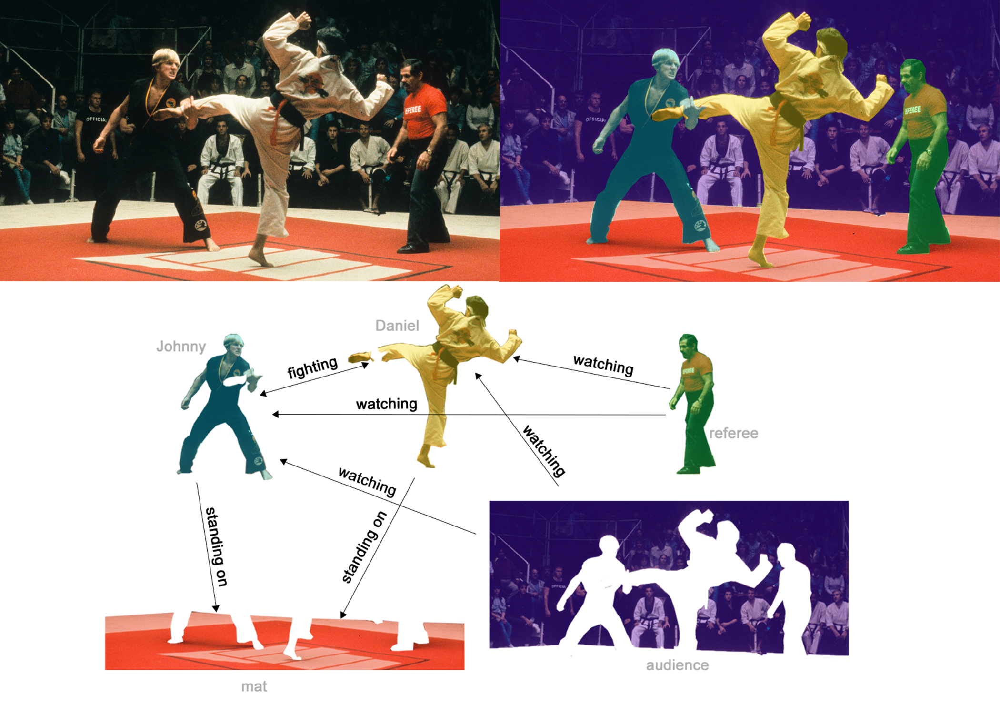
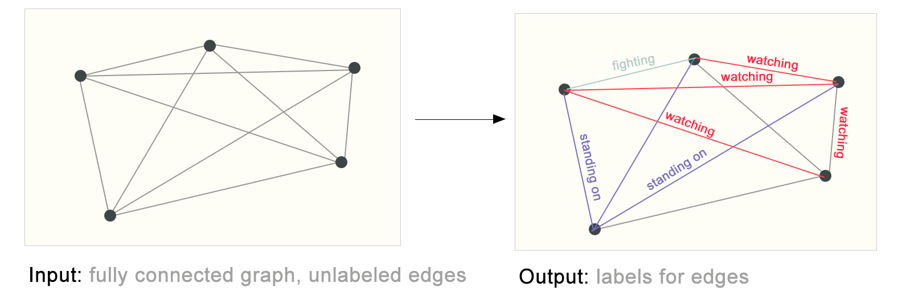
左边是我们从之前的视觉场景构建的初始图。右边是当根据模型输出修剪了一些连接后，该图可能的一种边标记。
在机器学习中使用图的挑战
那么，我们如何用神经网络解决这些不同的图任务呢？第一步是思考如何表示图，使其与神经网络兼容。
机器学习模型通常将矩形或网格状数组作为输入。因此，如何将它们表示成与深度学习兼容的格式并不直观。图最多有四种我们可能希望用来做预测的信息类型：节点、边、全局上下文和连通性。前三种相对简单：例如，对于节点，我们可以通过为每个节点分配索引 $i$ 并将 $node_i$ 的特征存储在 $N$ 中来形成节点特征矩阵 $N$。虽然这些矩阵具有可变数量的示例，但它们可以在没有任何特殊技术的情况下被处理。
然而，表示图的连通性更为复杂。也许最明显的选择是使用邻接矩阵，因为它很容易张量化。然而，这种表示有一些缺点。从示例数据集表中，我们看到图中的节点数可以达到百万量级，每个节点的边数可以高度可变。这通常会导致非常稀疏的邻接矩阵，这在空间上效率低下。
另一个问题是存在许多可以编码相同连通性的邻接矩阵，并且不能保证这些不同的矩阵在深度神经网络中会产生相同的结果（也就是说，它们不是置换不变的）。
学习置换不变操作是最近的研究领域。[Mena2018-ce]
[][Murphy2018-fz]
[]
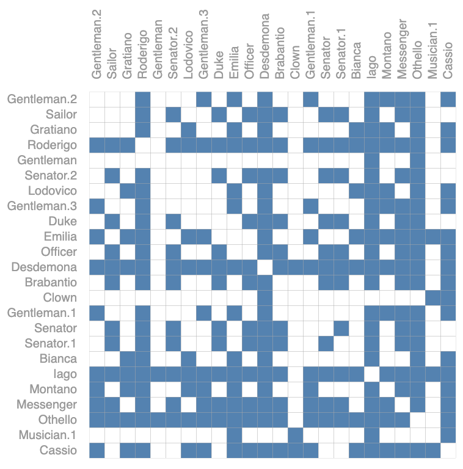
表示同一图的两个邻接矩阵。
下面的示例展示了可以描述这个 4 节点小图的所有邻接矩阵。这已经是相当数量的邻接矩阵了——对于像 Othello 这样更大的例子，这个数量是难以处理的。
表示稀疏矩阵的一种优雅且节省内存的方式是使用邻接列表。这些将节点 $n_i$ 和 $n_j$ 之间的边 $e_k$ 的连通性描述为邻接列表第 k 个条目中的元组 (i,j)。由于我们期望边的数量远低于邻接矩阵的条目数（$n_{nodes}^2$），我们避免了对图中未连接部分的计算和存储。
另一种表述方式是用 Big-O 记号，更优的是具有 $O(n_{edges})$，而不是 $O(n_{nodes}^2)$。
为了让这个概念具体，我们可以看到不同图中的信息在这种规范下如何被表示：
应该注意，图中使用每个节点/边/全局的标量值，但大多数实际的张量表示对每个图属性都有向量。不是大小为 $[n_{nodes}]$ 的节点张量，我们将处理大小为 $[n_{nodes}, node_{dim}]$ 的节点张量。对其他图属性也是如此。
图神经网络[Gilmer2017-no][Battaglia2018-pi]
现在图的描述已经以置换不变的矩阵格式呈现，我们将描述使用图神经网络 (GNN) 来解决图预测任务。GNN 是对图的所有属性（节点、边、全局上下文）进行可优化的变换，它保留图的对称性（置换不变性）。我们将使用 Gilmer 等人提出的“消息传递神经网络”框架[]，并采用 Battaglia 等人引入的 Graph Nets 架构示意图[] 来构建 GNN。GNN 采用“图进图出”的架构，这意味着这些模型类型接受一个图作为输入，信息加载到其节点、边和全局上下文中，并逐步转换这些嵌入，而不改变输入图的连通性。
最简单的 GNN
有了我们上面构建的图的数值表示（使用向量而不是标量），我们现在可以构建一个 GNN。我们将从最简单的 GNN 架构开始，在这个架构中我们为所有图属性（节点、边、全局）学习新的嵌入，但我们还不使用图的连通性。
为简单起见，之前的图使用标量来表示图属性；实际上特征向量或嵌入要更有用得多。
这个 GNN 在图的每个组件上使用一个单独的多层感知机 (MLP)（或你最喜欢的任何可微模型）；我们称之为 GNN 层。对于每个节点向量，我们应用 MLP 并得到一个学习的节点向量。我们对每条边做同样的事情，学习每个边的嵌入，对于全局上下文向量也是如此，学习整个图的单个嵌入。
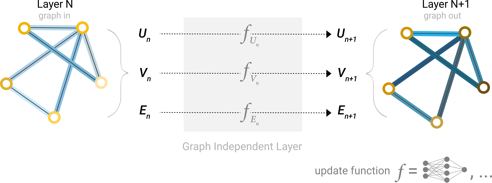
一个简单 GNN 的单层。图是输入，每个组件 (V,E,U) 都被 MLP 更新以产生一个新图。每个函数下标表示 GNN 模型第 n 层针对不同图属性的独立函数。
正如神经网络模块或层通常那样，我们可以将这些 GNN 层堆叠在一起。
因为 GNN 不会更新输入图的连通性，我们可以用与输入图相同的邻接列表和相同数量的特征向量来描述 GNN 的输出图。但是，输出图具有更新的嵌入，因为 GNN 更新了每个节点、边和全局上下文表示。
通过汇聚信息进行 GNN 预测
我们已经构建了一个简单的 GNN，但如何在我们上面描述的任何任务中进行预测呢？

<<<PARA_78>>> 我们可以想象一个社交网络，我们希望通过不使用用户数据（节点）来匿名化它们，而只使用关系数据（边）。这种情景的一个实例就是我们在
我们可以想象一个社交网络，我们希望通过不使用用户数据（节点）来匿名化它们，而只使用关系数据（边）。这种情景的一个实例就是我们在
节点级别任务
小节中指定的节点任务。在空手道俱乐部示例中，这将是仅使用人们之间的会面次数来确定对 Hi 先生或 John H 的联盟。
对于要汇聚的每个项目，收集它们各自的嵌入并将它们连接成一个矩阵。 然后对收集的嵌入进行聚合，通常通过求和操作。
关于聚合操作的更深入讨论请转到
比较聚合操作
部分。
我们用字母 $\rho$ 表示汇聚操作，并用 $p_{E_n \to V_{n}}$ 表示我们正在从边到节点收集信息。
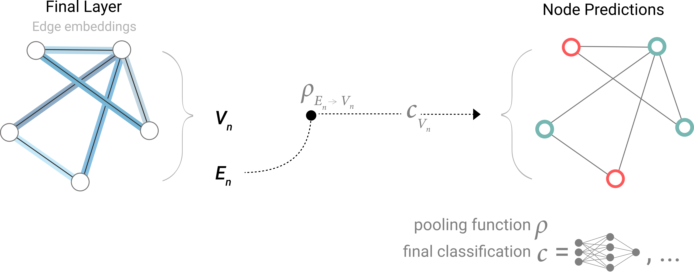
<<<PARA_89>>> 如果我们只有节点级别特征，并试图预测二元边级别信息，模型看起来像这样。
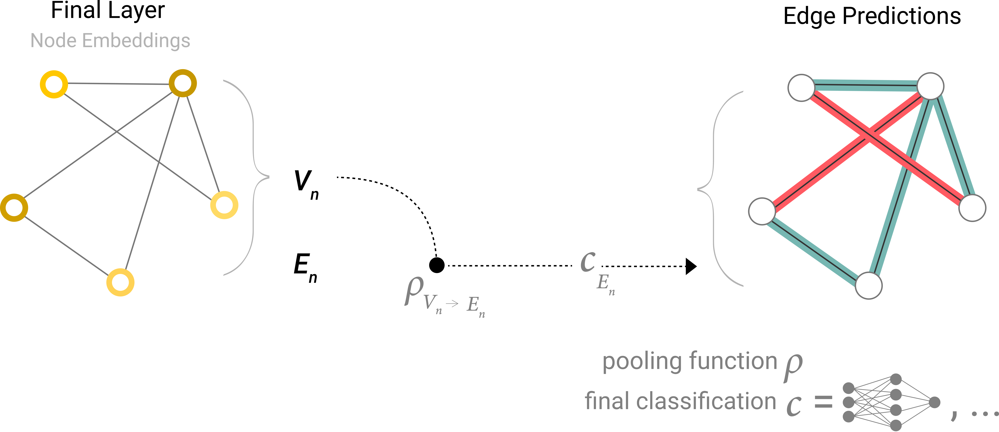
<<<PARA_91>>> 这种情景的一个示例就是我们在
这种情景的一个示例就是我们在
边级别任务
小节中指定的边任务。节点可以被识别为图像实体，我们试图预测这些实体是否共享关系（二元边）。
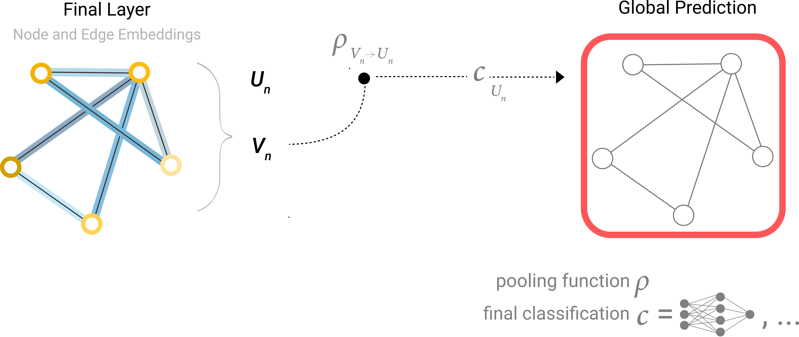
<<<PARA_96>>> 这是预测分子属性的常见情景。例如，我们有原子信息、连通性，并且我们想知道一个分子的毒性（有毒/无毒），或者它是否具有特定的气味（玫瑰味/非玫瑰味）。
这是预测分子属性的常见情景。例如，我们有原子信息、连通性，并且我们想知道一个分子的毒性（有毒/无毒），或者它是否具有特定的气味（玫瑰味/非玫瑰味）。
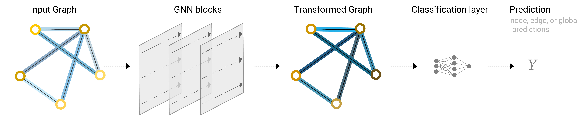
使用 GNN 模型的端到端预测任务。
现在我们已经展示了可以构建一个简单的 GNN 模型，并通过在图的不同部分之间路由信息来进行二元预测。这种汇聚技术将成为构建更复杂 GNN 模型的构建块。如果我们有新的图属性，我们只需要定义如何将信息从一个属性传递到另一个。
请注意，在这个最简单的 GNN 表述中，我们根本没有在 GNN 层内部使用图的连通性。每个节点都是独立处理的，每个边也是如此，全局上下文也是如此。我们只在为预测汇聚信息时使用连通性。
在图的不同部分之间传递消息[Gilmer2017-no]
我们可以通过在 GNN 层内使用汇聚来做出更复杂的预测，以便让我们的学习嵌入意识到图的连通性。我们可以使用消息传递[] 来做到这一点，其中相邻的节点或边交换信息并影响彼此的更新嵌入。
对于图中的每个节点，收集所有相邻节点嵌入（或消息），这是上面描述的 $g$ 函数。 通过聚合函数（例如求和）聚合所有消息。 所有汇聚的消息都通过一个更新函数，通常是一个学习的神经网络。
你也可以 1) 收集消息，3) 更新它们，2) 聚合它们，仍然得到一个置换不变的操作。[Zaheer2017-uc]
[]
正如汇聚可以应用于节点或边一样，消息传递可以在节点或边之间发生。
这些步骤是利用图的连通性的关键。我们将在 GNN 层中构建消息传递的更复杂变体，从而产生表达能力和能力不断增强的 GNN 模型。
这一系列操作，当应用一次时，就是最简单类型的消息传递 GNN 层。
这让人想起标准卷积：本质上，消息传递和卷积都是聚合和处理一个元素的邻居信息以更新该元素值的操作。在图中，元素是一个节点；在图像中，元素是一个像素。然而，图中相邻节点的数量可以是可变的，不像图像中每个像素都有固定数量的相邻元素。
通过将消息传递 GNN 层堆叠在一起，一个节点最终可以整合来自整个图的信息：经过三层后，一个节点拥有距离它三步之遥的节点的信息。

GCN 架构示意图，它通过汇聚距离为一度的相邻节点来更新图的节点表示。
学习边表示
我们的数据集并不总是包含所有类型的信息（节点、边和全局上下文）。当我们想要对节点进行预测，但我们的数据集只有边信息时，我们上面展示了如何使用汇聚将信息从边路由到节点，但只在模型的最终预测步骤。我们可以在 GNN 层内使用消息传递在节点和边之间共享信息。
我们可以像之前使用相邻节点信息一样，将相邻边的信息纳入进来，首先汇聚边信息，用更新函数转换它，然后存储它。

消息传递层的架构示意图。第一步“准备”一条由一条边及其连接的节点组成的消息，然后将消息“传递”给节点。[Kearnes2016-rl]
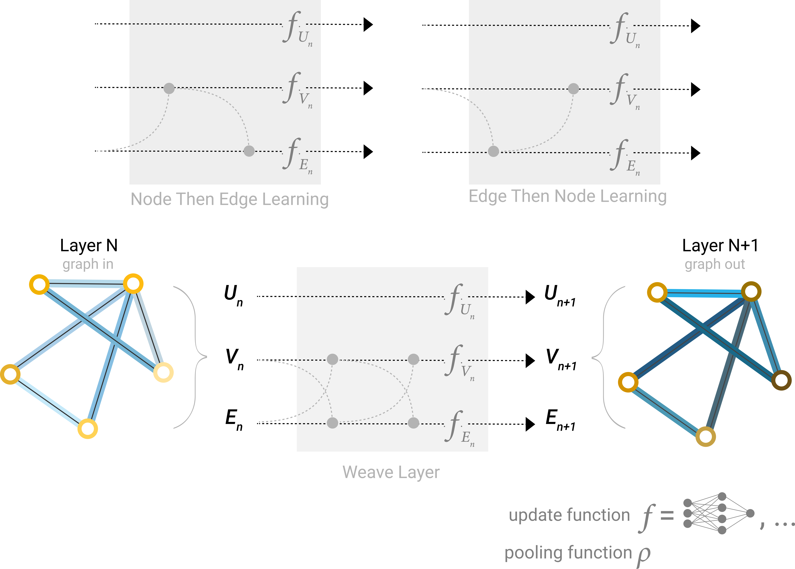
在 GNN 层中组合边和节点表示的一些不同方式。
添加全局表示[Gilmer2017-no]
到目前为止我们描述的网络有一个缺陷：图中相距很远的节点可能永远无法有效地相互传递信息，即使我们多次应用消息传递。对于一个节点，如果我们有 k 层，信息最多传播 k 步之远。这对于预测任务依赖于相距很远的节点或节点组的情况可能是个问题。一个解决方案是让所有节点能够相互传递信息。不幸的是，对于大型图，这很快就变得计算代价高昂（尽管这种称为“虚拟边”的方法已被用于像分子这样的小图）。[][Battaglia2018-pi][Gilmer2017-no]
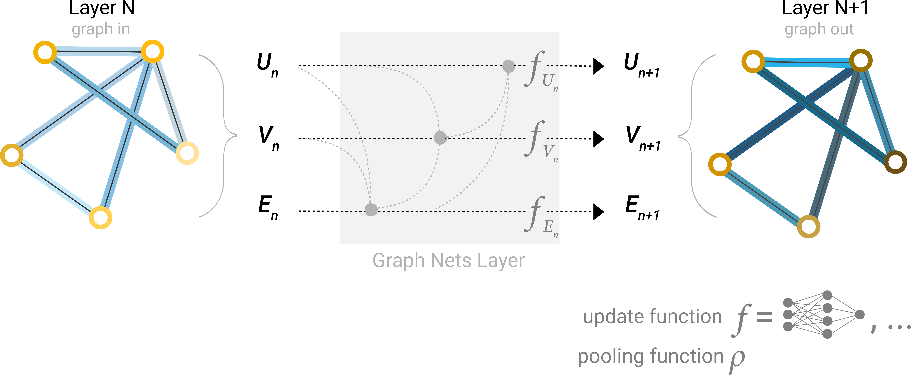
利用全局表示的 Graph Nets 架构示意图。[Dumoulin2018-tb]
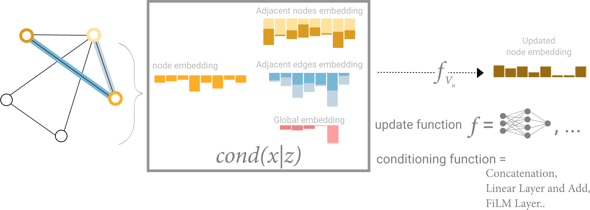
根据三个其他嵌入（相邻节点、相邻边、全局）调节一个节点信息的示意图。这一步对应于 Graph Nets 层中的节点操作。
GNN 游乐场
我们在这里描述了范围广泛的 GNN 组件，但它们在实践中实际上有什么不同呢？这个 GNN 游乐场允许你看到这些不同的组件和架构如何影响 GNN 学习真实任务的能力。[Sanchez-Lengeling2020-qq][Sanchez-Lengeling2019-vs]
我们的游乐场展示了一个带有小型分子图的图级别预测任务。我们使用 Leffingwell Odor Dataset[][]，它由带有相关气味感知（标签）的分子组成。预测分子结构（图）与其气味之间的关系是一个跨越化学、物理、神经科学和机器学习的百年问题。
为了简化问题，我们只考虑每个分子一个二元标签，分类分子图是否闻起来“pungent”（刺鼻），由专业调香师标注。我们说一个分子具有“pungent”气味，如果它有强烈、突出的气味。例如，大蒜和芥末可能含有烯丙醇分子，就具有这种特性。常用于薄荷味糖果的胡薄荷酮分子也被描述为具有刺鼻的气味。
我们将每个分子表示为图，其中原子是节点，包含其原子身份（碳、氮、氧、氟）的一热编码，键是边，包含其键类型（单键、双键、三键或芳香键）的一热编码。
GNN 层的数量，也称为深度。 每个属性更新时的维度。更新函数是一个带有 relu 激活函数和 layer norm 用于激活归一化的单层 MLP。 汇聚中使用的聚合函数：max、mean 或 sum。 要更新的图属性，或消息传递的风格：节点、边和全局表示。我们通过布尔开关（开或关）来控制这些。一个基线模型将是一个图独立 GNN（所有消息传递关闭），它在最后将所有数据聚合到一个单一的全局属性中。打开所有消息传递函数会产生 GraphNets 架构。
为了更好地理解 GNN 如何学习针对任务优化的图表示，我们还查看 GNN 的倒数第二层激活。这些“图嵌入”是 GNN 模型在预测之前的输出。由于我们使用广义线性模型进行预测，一个线性映射就足以让我们看到我们如何围绕决策边界学习表示。
由于这些是高维向量，我们通过主成分分析 (PCA) 将它们降维到 2D。 一个完美的模型会清晰地分离有标签的数据，但由于我们正在降维并且模型也不完美，这个边界可能更难看到。
尝试不同的模型架构来建立你的直觉。例如，看看你是否能编辑左边的分子来增加模型预测。对于不同的模型架构，同样的编辑是否有相同的影响？
这个游乐场在浏览器中实时运行，使用
tfjs
一些经验性的 GNN 设计经验[Dwivedi2020-xm][You2020-vk]
在探索上面的架构选择时，你可能发现有些模型比其他模型性能更好。是否存在一些明确的 GNN 设计选择能给我们带来更好的性能？例如，更深的 GNN 模型是否比浅的性能更好？或者在聚合函数之间是否有明确的选择？答案将取决于数据，[] []，甚至不同的特征化和构建图的方式也可能给出不同的答案。
通过下面的交互式图，我们探索了 GNN 架构的空间以及这个任务在几个主要设计选择下的性能：消息传递风格、嵌入的维度、层数和聚合操作类型。
散点图中的每个点代表一个模型：x 轴是可训练变量的数量，y 轴是性能。将鼠标悬停在一个点上可以看到 GNN 架构参数。
首先要注意的是，令人惊讶的是，参数数量越多确实与更高的性能相关。GNN 是一种参数非常高效的模型类型：即使参数数量很少（3k），我们已经可以找到性能很高的模型。
接下来，我们可以查看根据不同图属性的学习表示的维度聚合的性能分布。
我们可以注意到，具有更高维度的模型往往具有更好的平均性能和下界性能，但对于最大值没有发现相同的趋势。一些顶级性能的模型可以在较小的维度中找到。由于更高的维度也将涉及更多的参数，这些观察与前面的图一致。
接下来我们可以看到基于 GNN 层数的性能分解。[Corso2020-py]
箱线图显示了类似的趋势，虽然平均性能随着层数的增加而趋于提高，但表现最好的模型不是三层或四层，而是两层。此外，四层的性能下界会下降。这种效果以前也被观察到，具有更多层的 GNN 会将信息广播到更远的距离，并且可能面临节点表示因多次连续迭代而被“稀释”的风险[]。
我们的数据集是否有偏好的聚合操作？下面的图按聚合类型分解了性能。
总体而言，sum 在平均性能上有非常轻微的改进，但 max 或 mean 可以产生同样好的模型。这在查看聚合操作的区分/表达能力时很有用。
之前的探索给出了混合的信息。我们可以找到平均趋势，即更多复杂性带来更好的性能，但我们也可以找到明确的反例，即参数更少、层数更少或维度更低的模型表现更好。一个更清晰的趋势是关于相互传递信息的属性数量。
这里我们根据消息传递风格分解性能。在两个极端，我们考虑不进行图实体间通信的模型（“none”）和在节点、边和全局之间传递消息的模型。
总体上我们看到，相互通信的图属性越多，平均模型的性能越好。我们的任务以全局表示为中心，因此明确学习这个属性也往往能提高性能。我们的节点表示似乎也比边表示更有用，这很合理，因为更多信息加载在这些属性中。
从这里开始，你可以朝着许多方向去获得更好的性能。我们希望强调两个大方向，一个与更复杂的图算法相关，另一个针对图本身。[Markowitz2021-rn][Du2019-hr][Xu2018-hq][Velickovic2019-io]
直到现在，我们的 GNN 是基于基于邻域的汇聚操作。有些图概念用这种方式更难表达，例如线性图路径（节点的连接链）。在 GNN 中设计新的机制来提取、执行和传播图信息是当前的一个研究领域[]、[]、[]、[]。
GNN 研究的前沿之一不是制造新的模型和架构，而是“如何构建图”，更准确地说，是为图注入额外的结构或关系以便利用。正如我们大致看到的，相互通信的图属性越多，我们往往能得到更好的模型。在这个特定情况下，我们可以考虑让分子图更丰富，通过在节点之间添加额外的空间关系，添加不是键的边，或者子图之间明确可学习的关系统。
更多内容见
其他类型的图
深入细节
接下来，我们有几个关于与 GNN 相关的各种图主题的部分。
其他类型的图（多重图、超图、超节点、分层图）
虽然我们只描述了每个属性具有向量化信息的图，但图结构更加灵活，可以容纳其他类型的信息。幸运的是，消息传递框架足够灵活，以至于通常将 GNN 适配到更复杂的图结构主要是定义信息如何被新的图属性传递和更新。[Harary1969-qo][Poulovassilis1994-bt][Zitnik2018-uk][Stocker2020-tr]
例如，我们可以考虑多重边图或多重图[]，其中一对节点可以共享多种类型的边，当我们想根据节点的类型以不同方式建模节点之间的交互时就会发生这种情况。例如在社交网络中，我们可以根据关系类型（熟人、朋友、家人）来指定边类型。GNN 可以通过为每种边类型采用不同类型的消息传递步骤来适配。我们还可以考虑嵌套图，例如一个节点表示一个图，也称为超节点图。[] 嵌套图对于表示分层信息很有用。例如，我们可以考虑一个分子网络，其中一个节点表示一个分子，如果我们有将一个分子转化为另一个分子的方式（反应），则两个分子之间共享一条边[] []。在这种情况下，我们可以通过让一个 GNN 在分子级别学习表示，另一个在反应网络级别学习表示，并在训练期间在它们之间交替来学习嵌套图。[Berge1976-ss]
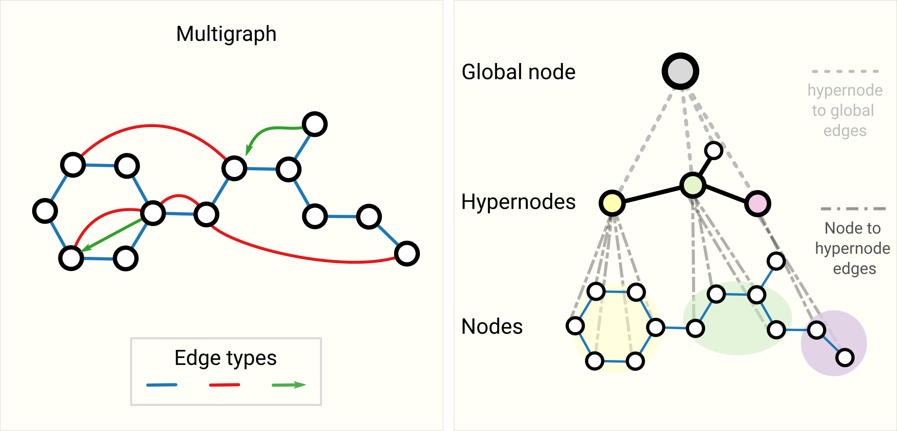
更复杂图的示意图。左边是一个具有三种边类型（包括有向边）的多重图示例。右边是一个三级分层图，中间级节点是超节点。[Yadati2018-de][Zhong2020-mv]
如何训练和设计具有多种类型图属性的 GNN 是当前的研究领域[]、[]。
在 GNN 中采样图和批处理[Rozemberczki2020-lq][Leskovec2006-st][Hubler2008-us]
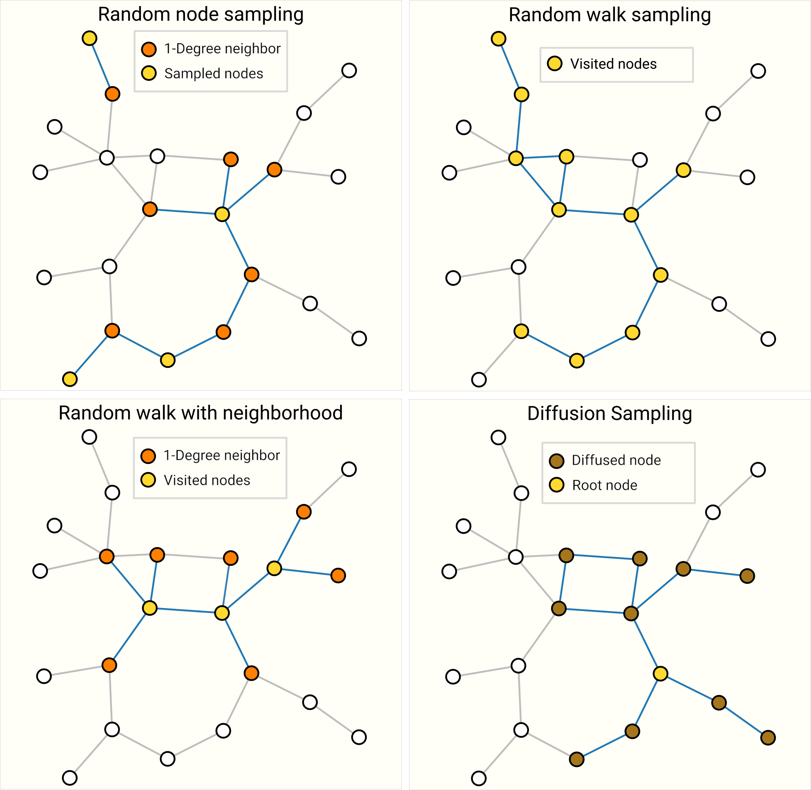
对同一图进行采样的四种不同方式。采样策略的选择高度依赖于上下文，因为它们会产生不同的图统计分布（# 节点、# 边等）。对于高度连通的图，边也可以被子采样。[Chiang2019-yh][Zeng2019-eh]
当图大到无法放入内存时，对图进行采样特别相关。这启发了新的架构和训练策略，如 Cluster-GCN[] 和 GraphSaint[]。我们预计图数据集在未来会继续增长。
归纳偏置
当构建一个模型来解决特定类型数据的问题时，我们希望将模型专门化以利用该数据的特性。当成功做到这一点时，我们通常会看到更好的预测性能、更短的训练时间、更少的参数和更好的泛化。
例如，在图像上标注时，我们希望利用无论狗是在图像的左上角还是右下角，它仍然是一只狗这一事实。因此，大多数图像模型使用卷积，它是平移不变的。对于文本，token 的顺序非常重要，因此循环神经网络按顺序处理数据。此外，一个 token（例如单词“not”）的存在会影响句子其余部分的含义，因此我们需要能够“关注”文本其他部分的组件，而像 BERT 和 GPT-3 这样的 Transformer 模型可以做到。这些是一些归纳偏置的例子，我们正在识别数据中的对称性或规律性，并添加利用这些属性的建模组件。[Battaglia2018-pi]
在图的情况下，我们关心每个图组件（边、节点、全局）如何相互关联，因此我们寻求具有关系归纳偏置的模型。[] 模型应该保留实体之间的显式关系（邻接矩阵）并保留图的对称性（置换不变性）。我们期望实体之间交互很重要的问题会从图结构中受益。具体来说，这意味着设计对集合的变换：对节点或边的操作顺序不应该重要，并且操作应该适用于可变数量的输入。
比较聚合操作
从相邻节点和边汇聚信息是任何具有合理能力的 GNN 架构中的关键步骤。因为每个节点都有可变数量的邻居，并且因为我们想要一种可微的方法来聚合这些信息，我们希望使用一个对节点顺序和提供的节点数量不变的平滑聚合操作。[Xu2018-sf]
选择和设计最优的聚合操作是一个开放的研究课题。[] 聚合操作的一个理想属性是相似的输入提供相似的聚合输出，反之亦然。一些非常简单的置换不变候选操作是 sum、mean 和 max。像方差这样的摘要统计量也有效。所有这些都接受可变数量的输入，并提供与输入顺序无关的相同输出。让我们探索这些操作之间的差异。
没有哪种操作是统一的最佳选择。当节点具有高度可变的邻居数量时，或者你需要局部邻域特征的归一化视图时，mean 操作可能很有用。当你想在局部邻域中突出单个显著特征时，max 操作可能很有用。Sum 在这两者之间提供平衡，通过提供局部特征分布的快照，但因为它没有归一化，也可以突出离群值。在实践中，sum 很常用。[Skianis2019-ds][Corso2020-py][Pattanaik2020-jj]
设计聚合操作是一个与集合上的机器学习相交的开放研究问题。[] 像 Principal Neighborhood Aggregation[] 这样的新方法通过将几个聚合操作连接起来并添加一个取决于要聚合实体的连通性程度的缩放函数来考虑它们。同时，也可以设计特定领域的聚合操作。一个例子是“Tetrahedral Chirality”聚合算子[]。
GCN 作为子图函数逼近器[Liu2018-kf][Xu2018-sf]
另一种看待 k 层且进行 1 度邻居查找的 GCN（和 MPNN）的方式是将其视为在大小为 k 的子图的学习嵌入上运行的神经网络。[][]
当关注一个节点时，经过 k 层后，更新的节点表示对距离最多为 k 的所有邻居有一个有限的视角，本质上是一个子图表示。对边表示也是如此。
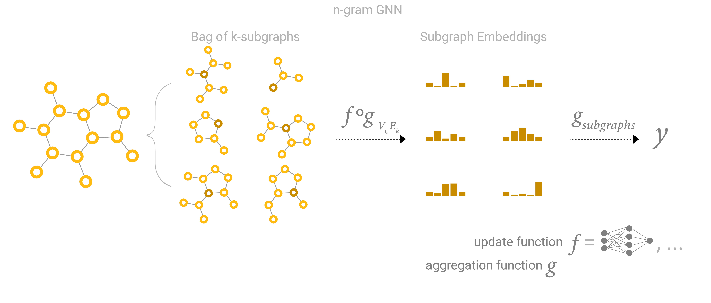
<<<PARA_184>>> 边和图对偶
边和图对偶
需要注意的一点是，边预测和节点预测虽然看起来不同，但通常可以归结为同一个问题：图 $G$ 上的边预测任务可以表述为 $G$ 的对偶上的节点级别预测。[Monti2018-ov]
要获得 $G$ 的对偶，我们可以将节点转换为边（边转换为节点）。一个图及其对偶包含相同的信息，只是以不同的方式表达。有时这个属性使得在一个表示中解决问题比在另一个中更容易，比如傅里叶空间中的频率。简而言之，要解决 $G$ 上的边分类问题，我们可以考虑在 $G$ 的对偶上进行图卷积（这与在 $G$ 上学习边表示相同），这个想法是用 Dual-Primal Graph Convolutional Networks 发展出来的。[]
[TODO: 图及其对偶的图像草图]
图卷积作为矩阵乘法，以及矩阵乘法作为图上的游走
我们已经讨论了很多关于图卷积和消息传递，当然，这引发了一个问题：我们如何在实践中实现这些操作？在本节中，我们探索矩阵乘法、消息传递的某些属性，以及它与遍历图的联系。
我们想要阐明的第一点是，邻接矩阵 $A$（大小 $n_{nodes} \times n_{nodes}$）与大小为 $n_{nodes} \times node_{dim}$ 的节点特征矩阵 $X$ 的矩阵乘法实现了一个带有求和聚合的简单消息传递。 设矩阵为 $B=AX$，我们可以观察到任何条目 $B_{ij}$ 可以表示为 $<A_{row_i} \cdot X_{column_j}>= A_{i,1}X_{1,j}+A_{i,2}X_{2, j}+\dots+A_{i,n}X_{n, j}=\sum_{A_{i,k}>0} X_{k,j}$。因为 $A_{i,k}$ 是二元条目，只有当 $node_i$ 和 $node_k$ 之间存在边时才有值，所以内积本质上是“收集”与 $node_i$ 共享边的所有维度为 $j$ 的节点特征值。应该注意，这个消息传递没有更新节点特征的表示，只是汇聚相邻节点特征。但这可以很容易地通过在矩阵乘法之前或之后将 $X$ 通过你最喜欢的可微变换（例如 MLP）来适配。
从这个视角，我们可以欣赏使用邻接列表的好处。由于 $A$ 预期的稀疏性，我们不必对所有 $A_{i,j}$ 为零的地方求和。只要我们有一个基于索引收集值的操作，我们应该能够只检索正条目。此外，这种无矩阵乘法的方法使我们摆脱了必须使用求和作为聚合操作。
我们可以想象多次应用这个操作允许我们将信息传播到更远的距离。从这个意义上说，矩阵乘法是一种在图上遍历的形式。这种关系在查看邻接矩阵的幂 $A^K$ 时也很明显。如果我们考虑矩阵 $A^2$，项 $A^2_{ij}$ 计算从 $node_i$ 到 $node_j$ 的所有长度为 2 的游走，并且可以表示为内积 $<A_{row_i}, A_{column_j}> = A_{i,1}A_{1, j}+A_{i,2}A_{2, j}+\dots+A_{i,n}A_{n,j}$。直觉是第一个项 $a_{i,1}a_{1, j}$ 只有在两个条件下才为正：存在连接 $node_i$ 到 $node_1$ 的边，以及另一条连接 $node_1$ 到 $node_j$ 的边。换句话说，两条边形成了一条长度为 2 的路径，从 $node_i$ 经过 $node_1$ 到 $node_j$。由于求和，我们正在计算所有可能的中间节点。这种直觉在考虑 $A^3=A \times A^2$ 时继续成立……以此类推直到 $A^k$。[noauthor_undated-qq][Bapat2014-fk][Bollobas2013-uk]
关于如何将矩阵视为图，还有更深层的联系可供探索[][][]。
Graph Attention Networks[Vaswani2017-as][Velickovic2017-hf][Lee2018-ti]
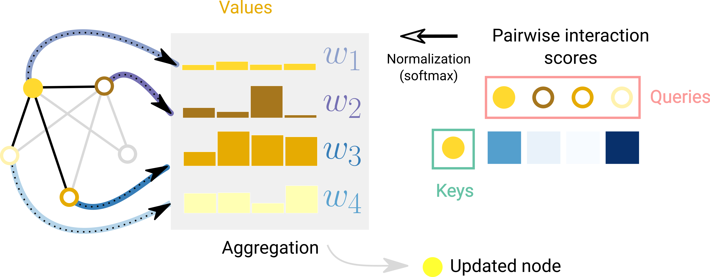
一个节点相对于其相邻节点的注意力示意图。对于每条边，计算一个交互分数，进行归一化，并用于加权节点嵌入。[Joshi2020-ze]
此外，Transformer 可以被视为具有注意力机制的 GNN[]。在这种视角下，Transformer 将几个元素（例如字符 token）视为完全连通图中的节点，注意力机制为每个节点对分配边嵌入，用于计算注意力权重。不同之处在于实体之间假设的连通性模式，GNN 假设稀疏模式，而 Transformer 对所有连接进行建模。
图解释和归因[McCloskey2018-ml][Ying2019-gk][Pope2019-py][NEURIPS2020_6054]
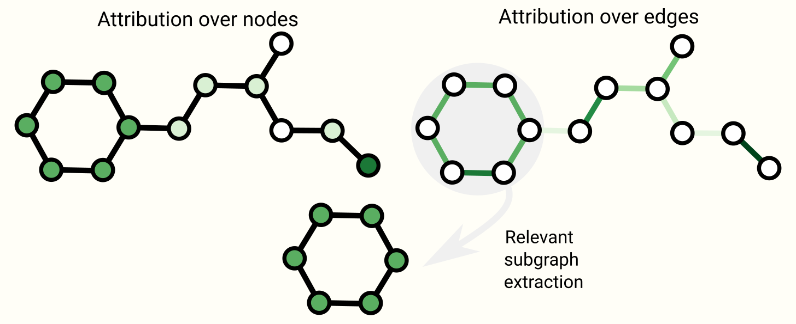
图上一些可解释性技术的示意图。归因将排序值分配给图属性。排序可以用作提取可能与任务相关的连通子图的基础。
生成建模
除了在图上学习预测模型，我们可能还关心学习图的生成模型。有了生成模型，我们可以通过从学习到的分布中采样或给定起点补全图来生成新图。一个相关的应用是在新药设计中，需要具有特定性质的新型分子图作为治疗疾病的候选者。[Kipf2016-ky]
图生成模型的一个关键挑战在于对图的拓扑进行建模，它的大小可能变化极大，并且有 $N_{nodes}^2$ 项。一个解决方案是直接对邻接矩阵进行建模，就像用自编码器框架处理图像一样。[] 边的存在或不存在的预测被视为二分类任务。$N_{nodes}^2$ 项可以通过只预测已知边和不存在边的一个子集来避免。graphVAE 学会对邻接矩阵中的正连通模式和一些非连通模式进行建模。[You2018-vx][Zhou2019-ko][Krenn2019-gg][Goyal2020-wl]
另一种方法是顺序地构建图，从一个图开始，迭代地应用离散动作，如添加或减去节点和边。为了避免为离散动作估计梯度，我们可以使用策略梯度。这已经通过自回归模型（如 RNN[]）或在强化学习场景中完成。[] 此外，有时图可以仅用带有语法元素的序列来建模。[][]
[TODO: 图生成的图像草图]
总结思考